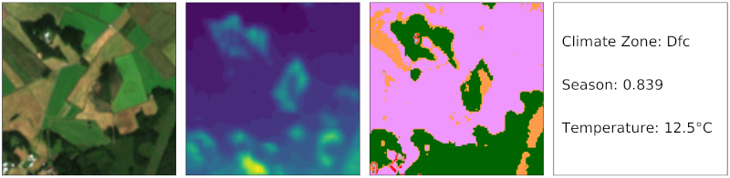

Erdbeobachtungsdaten sind multimodal. Daten werden von einer Vielzahl von Sensoren erfasst, von denen einige passive Sensoren (z.B. Multiband-Bildgebung) und andere aktive Sensoren (z.B. SAR) sind. Neben solchen Beobachtungsdaten sind für die meisten Standorte auf der Erde auch zusätzliche Archivdaten verfügbar.
Die Fernerkundung und Erdbeobachtung waren schon immer sehr aktiv in der Kombination verschiedener Datenmodalitäten (“Datenfusion”) bei der Analyse von Daten. Bei einem Datenfusionsansatz werden zwei oder mehr Datenmodalitäten in einer Analyse kombiniert, um die Ergebnisse im Vergleich zur Verwendung nur einer einzelnen Datenmodalität zu verbessern.
Dieses Konzept der Datenfusion wurde auch in Anwendungen des Deep Learning verwendet. In den meisten Anwendungen ist die Datenfusion jedoch auf nur zwei Datenmodalitäten beschränkt, was sich auch in den meisten verfügbaren Datensätzen widerspiegelt. Zum Beispiel kombiniert der weit verbreitete BigEarthNet Datensatz Sentinel-1 SAR mit Sentinel-2 multispektralen Daten (BigEarthNet-MM; MM steht für multimodal). Während diese Kombination für viele Anwendungen sehr leistungsfähig ist, bleibt die Frage, ob zusätzliche Informationen den Lernprozess unterstützen könnten.
{kind=link}

Um die Nützlichkeit verschiedener Datenmodalitäten zu erkunden, präsentieren wir den ben-ge Datensatz, der den BigEarthNet-MM Datensatz ergänzt, indem er frei und global verfügbare geografische und umweltbezogene Daten zusammenstellt.
Der ben-ge (BigEarthNet with Geographical and Environmental data) Datensatz ergänzt die Sentinel-1- und Sentinel-2-Daten, die über BigEarthNet bereitgestellt werden, um Folgendes:
- Höheninformationen, die aus dem Copernicus Digital Elevation Model GLO-30 extrahiert wurden;
- Landnutzungs-/Landbedeckungsdaten, die aus ESA Worldcover extrahiert wurden;
- Klimazoneninformationen, die aus Beck et al. 2018 extrahiert wurden;
- Umweltdaten wie Temperatur, relative Luftfeuchtigkeit und Windgeschwindigkeit, die zeitgleich mit den Sentinel-1/2-Beobachtungen aus der ERA-5 global Reanalysis stammen;
- eine saisonale Kodierung, die von 0 (Winter) bis 1 (Sommer) reicht.
Basierend auf diesem Datensatz zeigen wir den Nutzen der Kombination verschiedener Datenmodalitäten für die darauf folgenden Aufgaben der patchbasierten Klassifizierung und Segmentierung von Landnutzung/Landbedeckung. Beispielsweise stellen wir fest, dass die Leistung bei diesen nachgelagerten Aufgaben mit der Anzahl der verwendeten Modalitäten zunimmt. Natürlich sind Rasterdaten für Segmentierungsaufgaben vorteilhafter als Daten pro Szene.
Der ben-ge Datensatz ist frei verfügbar und soll als Testumgebung für vollständig überwachte und selbstüberwachte Anwendungen der Erdbeobachtung dienen.
Bibliographie
- Michael Mommert, Nicolas Kesseli, Joelle Hanna, Linus Scheibenreif, Damian Borth, Begüm Demir, “Ben-ge: Extending BigEarthNet with Geographical and Environmental Data”, IEEE International Geoscience and Remote Sensing Symposium 2023 (open access), 2023.